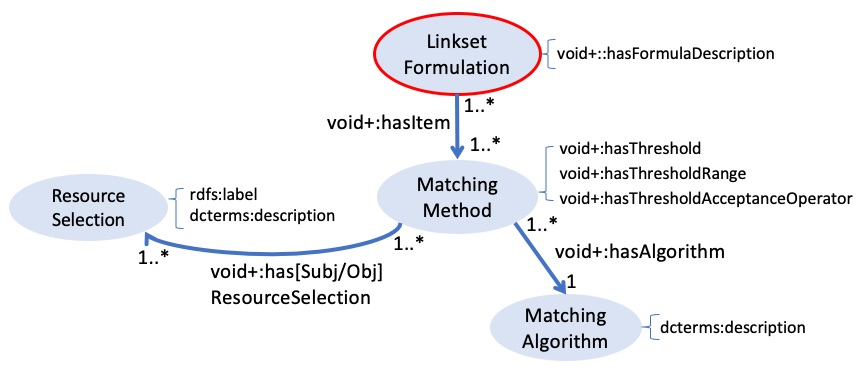
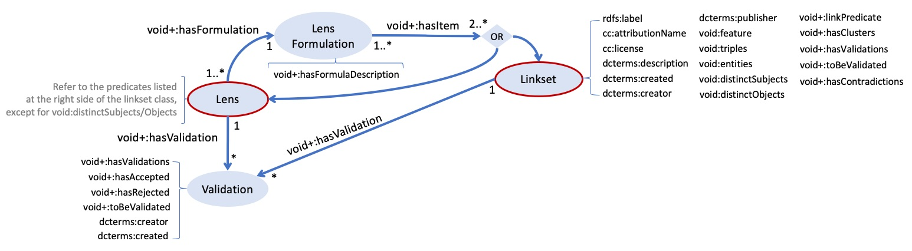

ONTOLOGY  ¶
¶
This section presents an Ontology meant for describing processes of generation and validation of links in detail, so that decisions made such as resource selections and matching options are made explicit. Those processes are implemented in the Lenticular Lens tool and result in the creation of Linksets or Lenses according to a specification. we call the proposed ontology VoID+ as it is proposed as an extension of the [VoID] vocabulary.
The next section presents the motivation for such extension while Section 3.2 and Section 3.3 respectively present the main elements proposed as extension for VoID and the complete and detailed description of the VoID+ extension.
1. Motivation to extend VoID¶
The model presented in Figure 1 is created based on the [VoID] documentation and owl-ontology description, where ellipses represent classes, thick arrows represent subclass or sub-property relations (hierarchy) and thin arrows represent properties. In this model, only classes and relations of interest are exhibit.
The [VoID] vocabulary provides means to describe datasets and linksets, but with limitations. The first important limitation that motivates our proposal for extension is that void:Linkset is (1) too restrictive as it is directed and holds between exactly two non-identical datasets. Furthermore, (2) it also does not describe the details of how they were generated, nor it provides means to describe Lenses or Validations. The next limitation is (3) the ambiguate descriptions of subsets or partitions of a void:Dataset. This concept is in our theory very important and requires more clarity and expressivity. Those issues are further discussed in the next section.
Fig 1: Excerpt of VoId Ontology regarding void:Dataset and void:Linkset.
A description of the classes and properties exhibited in Fig 1 is available in the table below.
| Vocabulary | Description |
|---|---|
| void:Dataset | A set of RDF triples that are published, maintained or aggregated by a single provider. |
| void:Linkset | A collection of RDF links between two void:Datasets. |
| void:subset | has subset. Domain: void:DatasetRange: void:Dataset |
| void:classPartition | A relation between a void:Dataset and its Partition, which is a subset of a void:Dataset that contains only entities of an explicitly defined rdfs:Class. Domain: void:Dataset Range: void:Dataset |
| void:propertyPartition | A relation between a void:Dataset and its Partition, which is a subset of a void:Dataset that contains only triples composed with an explicitly defined rdf:Property. Domain: void:Dataset Range: void:Dataset |
| void:class | A relation that assigns to a void:Dataset a rdfs:Class that is the rdf:type of all entities (subject) in a class-based partition. Domain: void:Dataset Range: rdfs:Class ( exactly 1 ) |
| void:property | A relation that assigns to a void:Dataset a rdf:Property that is the predicate of all triples in a property-based partition. Domain: void:Dataset Range: rdfs:Property ( exactly 1 ) |
| void:target | A relation that assigns one of the two datasets linked by the Linkset. Domain: void:Linkset Range: void:Dataset ( exactly 2 ) |
| void:subjectsTarget | A relation that assigns the dataset describing the subjects of triples contained in the Linkset. Domain: void:Linkset Range: void:Dataset ( exactly 1 ) |
| void:objectsTarget | A relation that assigns the dataset describing the objects of the triples contained in the Linkset. Domain: void:Linkset Range: void:Dataset ( exactly 1 ) |
2. VoID+ Main Elements¶
This section presents the main elements proposed as extension for VoID. It provides a simplified overview (Fig. 2) of VoID+ by (i) only describing the classes and properties that are of importance in this work and (ii) omitting hierarchical relations among classes. While the complete and detailed description of the VoID+ extension is provided in the next section, the complete ontology overview (figure) and the documentation extracted from the owl file are available in section 3.4.

Fig 2: The Lenticular Lens Ontology
The partial model of the simplified oberverview depicted in Fig. 2 highlights in yellow the use of [VoID] terms and in blue the new VoID+ terminology . In order to describe the proposed ontology, we dissect Fig 2 into four parts.
- First, a Resource Selection is elucidated.
- Second, we go about describing a Matching Formulation and show how it connects with a Resource Selection.
- The third step highlights that the description of a Linkset metadata involves specifying the Resource Selections used at the source and target positions of an entity matching process, the Matching Formulation, eventual validations plus statistics and authority information.
- The fourth and final step focuses on the annotation of a Lens by describing the combination of one or more Linksets and/or Lenses.
2.1 Resource Selection¶
This step concerns the selection of the resources under scrutiny, that can potentially end up co-referent entities across or within datasources during an entity matching process. To therefore perform a matching, one first needs not only to select datasource(s) but also restrict which resources will undergo the matching. The first way of doing so is by applying a type (class) restriction. This is mandatory in the Lenticular Lens process as matching algorithms are not fully automated. Down this line, further restrictions can be applied by forcing the value of a number of properties to lie within a certain range. A Resource Selection is thereby, the annotation of such process.
In the ontology excerpt depicted in Figure 3 we propose the entity type Resource Selection, which is also a void:Dataset that is a void:subset of one or more void:Dataset(s). It can also have further restrictions defined as void:classPartion and/or void:propertyPartition. While a void:classPartion solely consists in specifying the type of entity under scrutiny, the void:propertyPartition entails a little more. It consists in specifying a property or property path and a restriction that the selected property should undergo for the selection of the right entities for the further down the road entity matching process. Those restrictions can be combined using a Formula Description given by ll:hasFormulaDescription.
 Fig 3: Selecting a matching resource
Fig 3: Selecting a matching resource Example 1: Resource Selection
In this example,
- the entity resource:ResourceSelection-2 is a ll:ResourceSelection (and a void:Dataset) subset of resource:index_op_doopregister_raw_20190830 and also a collection (partition) of entities of type pnv:PersonName where each entity passed the filter test of (1) name in the English language which appears without trailing dots
"%...%"@enand (2) birthdates within the interval [1600, 1699]. - the entity resource:ResourceSelection-2 lists all three entities of type ll:PropertyConstraint and elaborates on the logic expression that binds all restrictions. For example, the property restriction described by resource:PropertyConstraint-PHce78383e3ff6e9dd73b6 documents that, applying the date function
"minimal_date"@enover dates in the format the"YYYY-MM-DD"@enwith the year restriction of 1600 makes sure that only persons born on 1600 onwards are admitted.
Turtle Syntax
When ever a literal in RDF syntax conatins quote or new line characters, the litreal
should be in a three quote syntax ("...""@en). In the example below, we deliberately
wrote the literal value of ll:hasFormulaDescription is in
a single quote ("...""@en) instead of a triple quote ("""%...%="""@en) as the syntax
highliter is somewhat buggy.
### RESOURCE 2
resource:ResourceSelection-2
a void:dataset, ll:ResourceSelection ;
rdfs:label "Baptisms in the 17th Century"@en ;
void:subset resource:index_op_doopregister_raw_20190830 ;
void:classPartition [ void:class pnv:PersonName ] ;
void:propertyPartition resource:PropertyConstraint-PHea6802ef02f99a848859 ;
void:propertyPartition resource:PropertyConstraint-PHce78383e3ff6e9dd73b6 ;
void:propertyPartition resource:PropertyConstraint-PH2580641bbdd572759cb9 ;
ll:hasFormulaDescription "
resource:PropertyConstraint-PHce78383e3ff6e9dd73b6
AND resource:PropertyConstraint-PH2580641bbdd572759cb9
AND (resource:PropertyConstraint-PHea6802ef02f99a848859)"@en .
resource:PropertyConstraint-PHea6802ef02f99a848859
a ll:PropertyConstraint ;
void:property
[
a rdfs:Sequence ;
rdf:_1 pnv:literalName
] ;
ll:hasFilterFunction "not_ilike"@en ;
ll:hasValueFunction "%...%"@en .
resource:PropertyConstraint-PHce78383e3ff6e9dd73b6
a ll:PropertyConstraint ;
void:property
[
a rdfs:Sequence ;
rdf:_1 saa:isInRecord ;
rdf:_2 saa:IndexOpDoopregisters ;
rdf:_3 saa:birthDate
] ;
ll:hasFilterFunction "minimal_date"@en ;
ll:hasValueFunction 1600 ;
ll:hasFormatFunction "YYYY-MM-DD"@en .
resource:PropertyConstraint-PH2580641bbdd572759cb9
a ll:PropertyConstraint ;
void:property
[
a rdfs:Sequence ;
rdf:_1 saa:isInRecord ;
rdf:_2 saa:IndexOpDoopregisters ;
rdf:_3 saa:birthDate
] ;
ll:hasFilterFunction "maximum_date"@en ;
ll:hasValueFunction "1699"@en ;
ll:hasFormatFunction "YYYY-MM-DD"@en .
2.2 Matching Formulation¶
For simple matching problems, finding co-referents can be done using a single matching algorithm (matcher). However, time and again the data reality often imposes the use of more than one matcher instead. In this latter scenario, clearly reporting on how these matchers work together for detecting co-referents is essential. A Matching Formulation entity is a resource for just doing the aforementioned, as depicted in Figure 4.
Once resources of type Resource Restriction are created, one can go ahead and used them for specifying the restricted collections to be used in a particular Matching Method, which also specifies the Matching Algorithm and its parameters such as threshold, range and operrator. In the end, all Matching Methods used in a matching process are documented in the Matching Formulation resource as well as how they bind together in a logic expression given by the predicate ll:hasFormulaDescription.

Fig 4: Specifying the way in which methods are logically combined
Example 2: Linkset Logic Expression
In Example 2.8, the resource:PHb99da2ecd91ad533af65 is a ll:MatchingFormulation listing eight ll:MatchingMethods used for creating a linkset. They their logic combination is described as ll:hasFormulaDescription. Among the ll:MatchingMethods, the resource:TIME_DELTA-PHfdc744f6bd0ced4e283a is the only method detailes in this example, documenting the four ll:ResourceSelections involved, as well as the chosen ll:MatchingAlgorithm, namely resource:TIME_DELTA, besides the threshold (20), threshold-unit (“Year”@en), threshold-operator (>=) and threshold-range “â„•” of the matching method.
Turtle Syntax
When ever a literal in RDF syntax conatins quote or new line characters, the litreal
should be in a three quote syntax ("...""@en). In the example below, we deliberately
wrote the literal value of ll:hasFormulaDescription is in
a single quote ("...""@en) instead of a triple quote ("""%...%="""@en) as the syntax
highliter is somewhat buggy.
######################################################
# LINKSET LOGIC EXPRESSION #
######################################################
resource:PHb99da2ecd91ad533af65
a ll:MatchingFormulation ;
ll:hasMethod resource:TIME_DELTA-PHfdc744f6bd0ced4e283a ;
ll:hasMethod resource:Exact-PH6491d1db6855098a70be ;
ll:hasMethod resource:LL_SOUNDEX-PH0ad3ad579d7a29347753 ;
ll:hasMethod resource:BLOOTHOOFT_REDUCT-PH10433274b57dafdd1335 ;
ll:hasMethod resource:Exact-PH4d4187a08c3ba4c1cf0d ;
ll:hasMethod resource:TIME_DELTA-PHe40547b9d3b6381347b4 ;
ll:hasMethod resource:LEVENSHTEIN_APPROX-PH10f4c17bbf933cae647f ;
ll:hasMethod resource:BLOOTHOOFT_REDUCT-PH98a9575087817b951447 ;
ll:hasFormulaDescription "
resource:TIME_DELTA-PHe40547b9d3b6381347b4
AND resource:TIME_DELTA-PHfdc744f6bd0ced4e283a
AND (
resource:Exact-PH4d4187a08c3ba4c1cf0d
OR (
resource:BLOOTHOOFT_REDUCT-PH98a9575087817b951447
AND resource:BLOOTHOOFT_REDUCT-PH10433274b57dafdd1335)
OR (
resource:Exact-PH6491d1db6855098a70be
AND (resource:LL_SOUNDEX-PH0ad3ad579d7a29347753
AND resource:LEVENSHTEIN_APPROX-PH10f4c17bbf933cae647f
)
)
)"@en .
######################################################
# METHOD SIGNATURES #
######################################################
### METHOD SPECIFICATIONS TIME_DELTA
resource:TIME_DELTA-PHe40547b9d3b6381347b4
a ll:MatchingMethod ;
ll:hasAlgorithm resource:TIME_DELTA ;
ll:hasThresholdRange "ℕ" ;
### SOURCE PREDICATE CONFIGURATION
ll:hasSubjResourceSelection resource:ResourceSelection-PHbe38976fdf884b6c4a8e ;
ll:hasSubjResourceSelection resource:ResourceSelection-PHe8fa664d04ad00aaa697 ;
### TARGET PREDICATE CONFIGURATION
ll:hasObjResourceSelection resource:ResourceSelection-PH71818c17d54a8fbec22b ;
ll:hasObjResourceSelection resource:ResourceSelection-PHc8a3c6e494d230b79a6b .
•••
2.3 Linkset¶
This step documents a linkset metadata including WHAT - HOW - WHEN - WHO and other processes explaining the aboutness of links. The Matching Formulation specifies HOW entities are matched and Resource Selection specifies WHAT to match as subject and object targets. Also some statistic on the matching results can be reported such as the number of links found, the numbers of entities linked, WHO created the linkset and WHEN. Finally, a Validation entity can also be specified, comprising metadata with statitics and auhtority information on the validation process. Observe that when one or more validations are provided, statistics on this matter can be included in the linkset metadata, including eventual contradictions if one validation says a link is correct while another says it is not.
As discussed earlier in this section, according to the [VoID] documentation, the void:Linkset definition expects as datasources exactly one source and one target, different from each other. This means it is more restrictive than the ll:Linkset here proposed, since the latter also expects a linkset to contain links within a datasource or across more than two. Therefore, we do not directly reuse that concept (and its correspoding properties void:subjects/objectsTarget). Naturally, one could still use void:Linkset for other purposes, but at the risk of abusing the VoID vocabulary if its instances do not really fit the required restrictions. Moreover, a void:Linkset (i.e. a resource representing a linkset’s metadata) is also not an instance of ll:Linkset since the later requires the description of the processes underlying the creation of the links, which is not the case for the first.

Fig 5: Specifying the linkset’s context
Example 3: A linkset annotation
### LINKSET 15
linkset:15
a ll:Linkset ;
void:feature format:Turtle ;
cc:attributionName "LenticularLens"@en ;
cc:license <http://purl.org/NET/rdflicense/W3C1.0> ;
dcterms:created "2020-09-26T09:37:23.933624"^^<http://www.w3.org/2001/XMLSchema#dateTime> ;
dcterms:creator "AL IDRISSOU" ;
dcterms:creator "GoldenAgents" ;
void:linkPredicate owl:sameAs ;
rdfs:label "Linkset 9"@en ;
dcterms:description "LINSET-15-9: Test Baptism against Marriage and burial with several nested methods "@en ;
### VOID LINKSET STATS
void:entities 12580 ;
### LENTICULAR LENS LINKSET STATS
### SOURCE ENTITY TYPE SELECTION(S)
ll:subjectsTarget resource:ResourceSelection-2 ;
### TARGET ENTITY TYPE SELECTION(S)
ll:objectsTarget resource:ResourceSelection-1 ;
ll:objectsTarget resource:ResourceSelection-3 ;
### THE LOGIC FORMULA
ll:hasLogicFormulation resource:PHb6e5e320dc08d7d9dd98 .
2.4 Lens¶
Another process relevant to document is the creation of Lenses. In short, a lens is the result of a set-like operation over one or more Linkset and or Lens. Therefore, the entity Lens documents them as ll:hasTarget

Fig 6: Specifying the linkset’s context
Example 4: A lens annotation
3. VoID+ Ontology¶
This section discuses the complete and detailed description of the VoID+ extension in two parts. It first addresses the void+:Partition of void:Dataset. Second, it tackles the void+:LinkDataset which is considered a special sub-types of void:Dataset. The documentation extracted from the owl file is presented in the next section.
3.1 Partitions of void:Dataset¶
The VoID vocabulary defines void:Dataset as a dataset superset but does make available a granularity of subsets for refined work. VoID+ extends the void:Dataset class by distinguishes between five subsets of void:Dataset. A void:Dataset that is defined as a subset of another one is called void+:Partition. Three types of void+:Partition are distinguished according to the type of partition that is used:
- (i) void+:ClassPartition: the dataset is the result of an rdfs:Class based-partition;
- (ii) void+:PropertyPartition: the dataset is the result of a rdf:Property or by a rdf:Seq – defining a sequence of two or more of properties – partition;
- (iii) void+:Language: the dataset is the result of a language partition given by a standardised ISO language code.
Another special type of partition is the void+:ResourceSelection. It is defined by one or more partions of the type above described,
Fig. 7 provides a straightforward understanding of how the class void:Dataset is extended. On its the left hand side, Fig. 7 presents a view on the classes, their hierarchy and how they are connected via object properties. On the one hand, the property void:subset and its sub-properties are extended such that they provide a directional non-ambiguous reading. On the other and, void:class and void:property are grouped into a superclass void+:partionedBy which also includes void:language to allow for one more type of partition. In particular, void:property is extended with a more generic relation void+:property that allows for describing a sequence of properties like in a property path.

Fig 7: VoID+ Extension on the void:Dataset
3.2 VoID+ Link-datasets¶
Figure 8 presents on the left hand side a view on the classes, their hierarchy and how they are connected via object properties. This provides a very straightforward understanding of how the class void:Linkset is extended. It is extended with superclasses that are less restrictive with respect with its targets. First, a void+:LinkDataset is a void:Dataset that contains links that may have been stabilished among one (deduplication), two or many datasets. When the creation of void+:LinkDataset is such that imposes that subjects always belong to the same datasets as well as objects, this is called void+:DirectedLinkDataset. This is the case for both void:Linkset but also for our definition of void+:Linkset. The former, however, requires excelty one dataset as target for its subjects and onther as target for its objects. In addition, our definition of void+:Linkset is also a void+:DocumentedLinkDataset, which requires more detailed documentation, including targets described as void+:ResourceSelection (all values from) and a void+:Formulation… A void+:Lens is also a void+:DocumentedLinkDataset which has one void:LensFormulation that specifies which void:LinkDatasets are combined and how.
The right hand side of Figure 8 presents a hierarchy of properties in order to provide an undestanding of how void:target and its subproperties are extended. They actually are extended with superclasses having as range not only a void:Linkset but its superclass void+:LinkDataset.

Fig 8: VoID+ Extension on the void:Linkset
3.3 VoID+ OWL¶
Here, we provide a turtle description of the ontology.
 VoID+
VoID+
@prefix : <http://lenticularlens.org/voidPlus#> .
@prefix owl: <http://www.w3.org/2002/07/owl#> .
@prefix rdf: <http://www.w3.org/1999/02/22-rdf-syntax-ns#> .
@prefix xml: <http://www.w3.org/XML/1998/namespace> .
@prefix xsd: <http://www.w3.org/2001/XMLSchema#> .
@prefix rdfs: <http://www.w3.org/2000/01/rdf-schema#> .
@prefix void: <http://rdfs.org/ns/void#> .
@prefix voidPlus: <http://lenticularlens.org/voidPlus/> .
@base <http://lenticularlens.org/voidPlus> .
<http://lenticularlens.org/voidPlus> rdf:type owl:Ontology .
#################################################################
# Object Properties
#################################################################
### http://lenticularlens.org/voidPlus/hasAlgorithm
voidPlus:hasAlgorithm rdf:type owl:ObjectProperty ,
owl:FunctionalProperty ;
rdfs:domain voidPlus:MatchingMethod ;
rdfs:range voidPlus:MatchingAlgorithm ;
rdfs:comment "relates a void+:MatchingMethod to its void+:MatchingAlgorithm."@en .
### http://lenticularlens.org/voidPlus/hasClassPartition
voidPlus:hasClassPartition rdf:type owl:ObjectProperty ;
rdfs:subPropertyOf voidPlus:hasSubset ,
void:classPartition ;
rdfs:comment "relates a void:Dataset to its subset void+:ClassPartition. In practice, the main difference wrt void:classPartition is the name meant to avoid missusage as it can be read as \"is classPartition of\" as well."@en .
### http://lenticularlens.org/voidPlus/hasFormulation
voidPlus:hasFormulation rdf:type owl:ObjectProperty ;
rdfs:domain voidPlus:LinkDataset ;
rdfs:range voidPlus:Formulation ;
rdfs:comment "relates a void+:LinkDataset to its void+:Formulation."@en .
### http://lenticularlens.org/voidPlus/hasItem
voidPlus:hasItem rdf:type owl:ObjectProperty ;
rdfs:domain voidPlus:Formulation ;
rdfs:comment "relates a void+:Formulation to its items."@en .
### http://lenticularlens.org/voidPlus/hasLanguagePartition
voidPlus:hasLanguagePartition rdf:type owl:ObjectProperty ;
rdfs:subPropertyOf voidPlus:hasSubset ;
rdfs:comment "relates a void:Dataset to its subset void+:LanguagePartition."@en .
### http://lenticularlens.org/voidPlus/hasObjectResourceSelection
voidPlus:hasObjectResourceSelection rdf:type owl:ObjectProperty ;
rdfs:subPropertyOf voidPlus:hasResourceSelection ;
rdfs:comment "a relation to assing a void+:ResourceSelection as the source for the subjects of triples under scrutiny."@en .
### http://lenticularlens.org/voidPlus/hasPropertyPartition
voidPlus:hasPropertyPartition rdf:type owl:ObjectProperty ;
rdfs:subPropertyOf voidPlus:hasSubset ,
void:propertyPartition ;
rdfs:comment "relates a void:Dataset to its subset void+:PropertyPartition. In practice, the main difference wrt void:propertyPartition is the name meant to avoid missusage as it can be read as \"is propertyPartition of\" as well."@en .
### http://lenticularlens.org/voidPlus/hasResourceSelection
voidPlus:hasResourceSelection rdf:type owl:ObjectProperty ;
rdfs:range voidPlus:ResourceSelection ;
rdfs:comment "a relation to assing a void+:ResourceSelection as the source for entities under scrutiny, for example, in a void+:MatchingMethos"@en .
### http://lenticularlens.org/voidPlus/hasSubjectResourceSelection
voidPlus:hasSubjectResourceSelection rdf:type owl:ObjectProperty ;
rdfs:subPropertyOf voidPlus:hasResourceSelection ;
rdfs:comment "a relation to assing a void+:ResourceSelection as the source for the objects of triples under scrutiny."@en .
### http://lenticularlens.org/voidPlus/hasSubset
voidPlus:hasSubset rdf:type owl:ObjectProperty ;
rdfs:subPropertyOf void:subset ;
owl:inverseOf voidPlus:subsetOf ;
rdfs:domain void:Dataset ;
rdfs:range voidPlus:Partition ;
rdfs:comment "relates a void:Dataset that has subset another void+:Partition. In practice, the main difference wrt void:subset is the name meant to avoid missusage as it can be read as \"is subset of\" as well. For a similar puporse, an inverse relation void+:subsetOf is also defined."@en .
### http://lenticularlens.org/voidPlus/hasTarget
voidPlus:hasTarget rdf:type owl:ObjectProperty ;
rdfs:domain voidPlus:LinkDataset ;
rdfs:range void:Dataset ;
rdfs:comment "A relation that assigns one or more void:Datasets linked by the void+:LinkDataset."@en .
### http://lenticularlens.org/voidPlus/hasValidation
voidPlus:hasValidation rdf:type owl:ObjectProperty ;
rdfs:domain voidPlus:LinkDataset ;
rdfs:range voidPlus:Validation ;
rdfs:comment "A relation that assigns a void+:LinkDataset to one or more void+:Validations."@en .
### http://lenticularlens.org/voidPlus/language
voidPlus:language rdf:type owl:ObjectProperty ;
rdfs:subPropertyOf voidPlus:partitionedBy ;
rdfs:range voidPlus:Language ;
rdfs:comment "A relation that assigns to a void:Dataset a void+:Language (for ISO standard language codes) that is the rdf:language of all literals (objects) qualifiying entities (subject) in a language-based partition."@en .
### http://lenticularlens.org/voidPlus/objectsTarget
voidPlus:objectsTarget rdf:type owl:ObjectProperty ;
rdfs:subPropertyOf voidPlus:hasTarget ;
rdfs:domain voidPlus:DirectedLinkDataset ;
rdfs:range void:Dataset ;
rdfs:comment "A relation that assigns void:Datasets describing the subjects of triples contained in the void+:DirectedLinkDataset."@en .
### http://lenticularlens.org/voidPlus/partitionedBy
voidPlus:partitionedBy rdf:type owl:ObjectProperty ;
rdfs:domain void:Dataset ;
rdfs:comment "A relation that assigns to a void:Dataset to the conditions under which it is partitioned."@en .
### http://lenticularlens.org/voidPlus/property
voidPlus:property rdf:type owl:ObjectProperty ;
rdfs:subPropertyOf voidPlus:partitionedBy ;
rdfs:range [ rdf:type owl:Class ;
owl:unionOf ( rdf:Property
rdf:Seq
)
] ;
rdfs:comment "A relation that assigns to a void:Dataset a rdf:Property or a rdf:Seq of properties that expresses the pattern of all triples in a property-based partition."@en .
### http://lenticularlens.org/voidPlus/subjectsTarget
voidPlus:subjectsTarget rdf:type owl:ObjectProperty ;
rdfs:subPropertyOf voidPlus:hasTarget ;
rdfs:domain voidPlus:DirectedLinkDataset ;
rdfs:range void:Dataset ;
rdfs:comment "A relation that assigns void:Datasets describing the objects of triples contained in the void+:DirectedLinkDataset."@en .
### http://lenticularlens.org/voidPlus/subsetOf
voidPlus:subsetOf rdf:type owl:ObjectProperty ;
rdfs:comment "relates a void+:Partition to its void:Dataset superset. Define as the inverse relation of void+:hasSubset."@en .
### http://rdfs.org/ns/void#class
void:class rdf:type owl:ObjectProperty ;
rdfs:subPropertyOf voidPlus:partitionedBy ;
rdfs:range rdfs:Class ;
rdfs:comment "A relation that assigns to a void:Dataset a rdfs:Class that is the rdf:type of all entities (subject) in a class-based partition."@en .
### http://rdfs.org/ns/void#classPartition
void:classPartition rdf:type owl:ObjectProperty ;
rdfs:subPropertyOf void:subset ;
rdfs:comment "A relation between a void:Dataset and its Partition, which is a subset of a void:Dataset that contains only entities of an explicitly defined rdfs:Class."@en .
### http://rdfs.org/ns/void#objectsTarget
void:objectsTarget rdf:type owl:ObjectProperty ;
rdfs:subPropertyOf voidPlus:objectsTarget ,
void:target ;
rdfs:domain void:Linkset ;
rdfs:comment "A relation that assigns the void:Dataset describing the objects of triples contained in the void:Linkset."@en .
### http://rdfs.org/ns/void#property
void:property rdf:type owl:ObjectProperty ;
rdfs:subPropertyOf voidPlus:property ;
rdfs:domain void:Dataset ;
rdfs:range rdf:Property ;
rdfs:comment "A relation that assigns to a void:Dataset a rdf:Property that is the predicate of all triples in a property-based partition."@en .
### http://rdfs.org/ns/void#propertyPartition
void:propertyPartition rdf:type owl:ObjectProperty ;
rdfs:subPropertyOf void:subset ;
rdfs:comment "A relation between a void:Dataset and its Partition, which is a subset of a void:Dataset that contains only triples composed with an explicitly defined rdf:Property."@en .
### http://rdfs.org/ns/void#subjectsTarget
void:subjectsTarget rdf:type owl:ObjectProperty ;
rdfs:subPropertyOf voidPlus:subjectsTarget ,
void:target ;
rdfs:domain void:Linkset ;
rdfs:comment "A relation that assigns the void:Dataset describing the subjects of triples contained in the void:Linkset."@en .
### http://rdfs.org/ns/void#subset
void:subset rdf:type owl:ObjectProperty ;
rdfs:domain void:Dataset ;
rdfs:range void:Dataset ;
rdfs:comment "relates a void:Dataset that has subset another void:Dataset."@en .
### http://rdfs.org/ns/void#target
void:target rdf:type owl:ObjectProperty ;
rdfs:subPropertyOf voidPlus:hasTarget ;
rdfs:domain void:Linkset ;
rdfs:range void:Dataset ;
rdfs:comment "A relation that assigns one of the two void:Datasets linked by the void:Linkset."@en .
### http://www.w3.org/2000/01/rdf-schema#member
rdfs:member rdf:type owl:ObjectProperty ;
rdfs:comment "rdfs:member is an instance of rdf:Property that is a super-property of all the container membership properties. In particular, properties called rdf:_1, rdf:_2, rdf:_3... etc., used for rdf:Seq are sub-properties of rdfs:member."@en .
#################################################################
# Data properties
#################################################################
### http://lenticularlens.org/voidPlus/hasFormulaDescription
voidPlus:hasFormulaDescription rdf:type owl:DatatypeProperty ;
rdfs:range xsd:string .
#################################################################
# Classes
#################################################################
### http://lenticularlens.org/voidPlus/ClassPartition
voidPlus:ClassPartition rdf:type owl:Class ;
owl:equivalentClass [ rdf:type owl:Restriction ;
owl:onProperty [ owl:inverseOf voidPlus:hasClassPartition
] ;
owl:someValuesFrom void:Dataset
] ,
[ rdf:type owl:Restriction ;
owl:onProperty void:class ;
owl:qualifiedCardinality "1"^^xsd:nonNegativeInteger ;
owl:onClass rdfs:Class
] ;
rdfs:subClassOf voidPlus:Partition ;
rdfs:comment "A void+:Partition that is partioned by a rdfs:Class."@en .
### http://lenticularlens.org/voidPlus/DirectedLinkDataset
voidPlus:DirectedLinkDataset rdf:type owl:Class ;
rdfs:subClassOf voidPlus:LinkDataset ;
rdfs:comment "A void+:LinkDataset that imposes that subjects always belong to the same datasets as well as objects."@en .
### http://lenticularlens.org/voidPlus/DocumentedLinkDataset
voidPlus:DocumentedLinkDataset rdf:type owl:Class ;
owl:equivalentClass [ owl:intersectionOf ( [ rdf:type owl:Restriction ;
owl:onProperty voidPlus:hasTarget ;
owl:someValuesFrom voidPlus:ResourceSelection
]
[ rdf:type owl:Restriction ;
owl:onProperty voidPlus:hasTarget ;
owl:allValuesFrom voidPlus:ResourceSelection
]
) ;
rdf:type owl:Class
] ;
rdfs:subClassOf voidPlus:LinkDataset ;
rdfs:comment "A void+:LinkDataset that requires detailed documentation, including targets described as void+:ResourceSelection (all values from) and a void+:Formulation."@en .
### http://lenticularlens.org/voidPlus/Formulation
voidPlus:Formulation rdf:type owl:Class ;
rdfs:comment "A (reusable) formulation that lists a number of items (e.g. matching methods or linksets) and describes how they are meant to be combined (e.g. using logic or set operators)."@en .
### http://lenticularlens.org/voidPlus/Language
voidPlus:Language rdf:type owl:Class ;
rdfs:comment "A set of standardized ISO langague codes."@en .
### http://lenticularlens.org/voidPlus/LanguagePartition
voidPlus:LanguagePartition rdf:type owl:Class ;
owl:equivalentClass [ rdf:type owl:Restriction ;
owl:onProperty voidPlus:language ;
owl:someValuesFrom voidPlus:Language
] ,
[ rdf:type owl:Restriction ;
owl:onProperty [ owl:inverseOf voidPlus:hasLanguagePartition
] ;
owl:someValuesFrom void:Dataset
] ;
rdfs:subClassOf voidPlus:Partition ;
rdfs:comment "A void+:Partition that is partioned by a void+:Language, i.e. an ISO standard language code."@en .
### http://lenticularlens.org/voidPlus/Lens
voidPlus:Lens rdf:type owl:Class ;
rdfs:subClassOf voidPlus:DocumentedLinkDataset ;
rdfs:comment "Similar to a void+:Linkset (in the sense that it is a collection of links sharing the same linktype) also involving one, two or more datasets, but not necessarilly directed. Moreover, context-wise, it differs from a linkset as it is generated using different processes (set-like link manipulation operators such as Union, Intersection, Difference or Transitivity) as compared to how a linkset comes about (matching algorithms)."@en .
### http://lenticularlens.org/voidPlus/LensFormulation
voidPlus:LensFormulation rdf:type owl:Class ;
rdfs:subClassOf voidPlus:Formulation ;
rdfs:comment "A resource that makes explicit all void+:LinkDatasets involved in the creation of a void+:Lens and how the they are combined."@en .
### http://lenticularlens.org/voidPlus/LinkDataset
voidPlus:LinkDataset rdf:type owl:Class ;
owl:equivalentClass [ rdf:type owl:Restriction ;
owl:onProperty voidPlus:hasTarget ;
owl:someValuesFrom void:Dataset
] ;
rdfs:subClassOf void:Dataset ;
rdfs:comment "A collection of RDF links between dataset(s), using the same link predicate (regardless of the link being an equality predicate or not). This predicate is called the linktype of the linkset. The links may have been stabilished among one (deduplication), two or many datasets."@en .
### http://lenticularlens.org/voidPlus/Linkset
voidPlus:Linkset rdf:type owl:Class ;
rdfs:subClassOf voidPlus:DirectedLinkDataset ,
voidPlus:DocumentedLinkDataset ;
rdfs:comment "A void+DirrectedLinkDataset that is also a void+:DocumentedLinkDataset."@en .
### http://lenticularlens.org/voidPlus/LinksetFormulation
voidPlus:LinksetFormulation rdf:type owl:Class ;
rdfs:subClassOf voidPlus:Formulation ;
rdfs:comment "A resource that makes explicit all void+:MatchingMethods involved in the creation of a void+:Linkset and how the methods are logically joint."@en .
### http://lenticularlens.org/voidPlus/MatchingAlgorithm
voidPlus:MatchingAlgorithm rdf:type owl:Class ;
rdfs:comment "A set of rules followed by a computer for finding pairs of matching resources. An algorithm can be further categorised as automated or semi-automated depending on whether it requires user assistance or not. Most matching algorithms employed in the Lenticular Lens are semi-automated."@en .
### http://lenticularlens.org/voidPlus/MatchingMethod
voidPlus:MatchingMethod rdf:type owl:Class ;
rdfs:comment "A resource that makes explicit all parameters/pre-requisites of a matching algorithm including the conditions in which the algorithm is to accept a discovered link (threshold)."@en .
### http://lenticularlens.org/voidPlus/Partition
voidPlus:Partition rdf:type owl:Class ;
owl:equivalentClass [ rdf:type owl:Restriction ;
owl:onProperty void:subset ;
owl:someValuesFrom void:Dataset
] ;
rdfs:comment "A void:Daset that is subset of another one."@en .
### http://lenticularlens.org/voidPlus/PropertyPartition
voidPlus:PropertyPartition rdf:type owl:Class ;
owl:equivalentClass [ rdf:type owl:Restriction ;
owl:onProperty [ owl:inverseOf voidPlus:hasPropertyPartition
] ;
owl:someValuesFrom void:Dataset
] ,
[ rdf:type owl:Restriction ;
owl:onProperty voidPlus:property ;
owl:qualifiedCardinality "1"^^xsd:nonNegativeInteger ;
owl:onClass [ rdf:type owl:Class ;
owl:unionOf ( rdf:Property
rdf:Seq
)
]
] ;
rdfs:subClassOf voidPlus:Partition ;
rdfs:comment "A void+:Partition that is partioned by a rdf:Property."@en .
### http://lenticularlens.org/voidPlus/PropertySequence
voidPlus:PropertySequence rdf:type owl:Class ;
owl:equivalentClass [ rdf:type owl:Restriction ;
owl:onProperty rdfs:member ;
owl:allValuesFrom rdf:Property
] ,
[ rdf:type owl:Restriction ;
owl:onProperty rdfs:member ;
owl:minQualifiedCardinality "2"^^xsd:nonNegativeInteger ;
owl:onClass rdf:Property
] ;
rdfs:subClassOf rdf:Seq ;
rdfs:comment "Represents a sequence of properties, analogously to a property path."@en .
### http://lenticularlens.org/voidPlus/ResourceSelection
voidPlus:ResourceSelection rdf:type owl:Class ;
rdfs:subClassOf void:Dataset ,
[ rdf:type owl:Restriction ;
owl:onProperty voidPlus:hasSubset ;
owl:someValuesFrom voidPlus:Partition
] ,
[ rdf:type owl:Restriction ;
owl:onProperty void:subset ;
owl:someValuesFrom void:Dataset
] ;
rdfs:comment "A collection of resources stemmed from the same void:Dataset. It is expected to have as partition, directly or indirectly (i.e. as a subset), a void+:ClassPartition. It can also have void+:PropertyPartitions, where property-value(s) can be restricted, as well as void+:LanguagePartitions, where the language of the property-value(s) can be reestricted."@en .
### http://lenticularlens.org/voidPlus/TypedPropertySequence
voidPlus:TypedPropertySequence rdf:type owl:Class ;
owl:equivalentClass [ rdf:type owl:Restriction ;
owl:onProperty rdfs:member ;
owl:allValuesFrom [ rdf:type owl:Class ;
owl:unionOf ( rdf:Property
rdfs:Class
)
]
] ,
[ rdf:type owl:Restriction ;
owl:onProperty rdfs:member ;
owl:minQualifiedCardinality "1"^^xsd:nonNegativeInteger ;
owl:onClass rdfs:Class
] ,
[ rdf:type owl:Restriction ;
owl:onProperty rdfs:member ;
owl:minQualifiedCardinality "2"^^xsd:nonNegativeInteger ;
owl:onClass rdf:Property
] ;
rdfs:subClassOf rdf:Seq ;
rdfs:comment """Represents a sequence of properties and classes, as in a different type property path with class restriction in between:
property -> class -> property -> class"""@en .
### http://lenticularlens.org/voidPlus/Validation
voidPlus:Validation rdf:type owl:Class ;
rdfs:subClassOf void:Dataset ;
rdfs:comment "A void:Dataset that contains triples regarding the validation of links from a void+:LinkDataset."@en .
### http://rdfs.org/ns/void#Dataset
void:Dataset rdf:type owl:Class ;
rdfs:comment "A set of RDF triples that are published, maintained or aggregated by a single provider"@en .
### http://rdfs.org/ns/void#Linkset
void:Linkset rdf:type owl:Class ;
rdfs:subClassOf voidPlus:DirectedLinkDataset ;
rdfs:comment "A collection of RDF links between *two* void:Datasets."@en .
### http://www.w3.org/1999/02/22-rdf-syntax-ns#Property
rdf:Property rdf:type owl:Class ;
rdfs:comment "rdf:Property is the class of RDF properties."@en .
### http://www.w3.org/1999/02/22-rdf-syntax-ns#Seq
rdf:Seq rdf:type owl:Class ;
rdfs:comment "The rdf:Seq class is the class of RDF 'Sequence' containers."@en .
### http://www.w3.org/2000/01/rdf-schema#Class
rdfs:Class rdf:type owl:Class ;
rdfs:comment "This is the class of resources that are RDF classes."@en .
### Generated by the OWL API (version 4.5.9.2019-02-01T07:24:44Z) https://github.com/owlcs/owlapi
4. VoID+ Documentation¶
Markdown documentation created by pyLODE 2.8.3
- URI:
http://lenticularlens.org/voidPlus - Ontology RDF: download voidPlus.owl
4.1 Overview¶
See Figure 7 and 8 above for an overview.
4.2 Classes¶
ClassPartition¶
Property |
Value |
|---|---|
| URI | http://lenticularlens.org/voidPlus/ClassPartition |
| Description | A void+:Partition that is partioned by a rdfs:Class. |
| Super-classes | void+:Partition |
DirectedLinkDataset¶
Property |
Value |
|---|---|
| URI | http://lenticularlens.org/voidPlus/DirectedLinkDataset |
| Description | A void+:LinkDataset that imposes that subjects always belong to the same datasets as well as objects. |
| Super-classes | void+:LinkDataset |
| Sub-classes | void+:Linkset void:Linkset |
| In domain of | void+:subjectsTarget void+:objectsTarget |
DocumentedLinkDataset¶
Property |
Value |
|---|---|
| URI | http://lenticularlens.org/voidPlus/DocumentedLinkDataset |
| Description | A void+:LinkDataset that requires detailed documentation, including targets described as void+:ResourceSelection (all values from) and a void+:Formulation. |
| Super-classes | void+:LinkDataset |
| Sub-classes | void+:Linkset void+:Lens |
Formulation¶
Property |
Value |
|---|---|
| URI | http://lenticularlens.org/voidPlus/Formulation |
| Description | A (reusable) formulation that lists a number of items (e.g. matching methods or linksets) and describes how they are meant to be combined (e.g. using logic or set operators). |
| Sub-classes | void+:LensFormulation void+:LinksetFormulation |
| In domain of | void+:hasItem |
| In range of | void+:hasFormulation |
Language¶
Property |
Value |
|---|---|
| URI | http://lenticularlens.org/voidPlus/Language |
| Description | A set of standardized ISO langague codes. |
| In range of | void+:language |
LanguagePartition¶
Property |
Value |
|---|---|
| URI | http://lenticularlens.org/voidPlus/LanguagePartition |
| Description | A void+:Partition that is partioned by a void+:Language, i.e. an ISO standard language code. |
| Super-classes | void+:Partition |
Lens¶
Property |
Value |
|---|---|
| URI | http://lenticularlens.org/voidPlus/Lens |
| Description | Similar to a void+:Linkset (in the sense that it is a collection of links sharing the same linktype) also involving one, two or more datasets, but not necessarilly directed. Moreover, context-wise, it differs from a linkset as it is generated using different processes (set-like link manipulation operators such as Union, Intersection, Difference or Transitivity) as compared to how a linkset comes about (matching algorithms). |
| Super-classes | void+:DocumentedLinkDataset |
LensFormulation¶
Property |
Value |
|---|---|
| URI | http://lenticularlens.org/voidPlus/LensFormulation |
| Description | A resource that makes explicit all void+:LinkDatasets involved in the creation of a void+:Lens and how the they are combined. |
| Super-classes | void+:Formulation |
LinkDataset¶
Property |
Value |
|---|---|
| URI | http://lenticularlens.org/voidPlus/LinkDataset |
| Description | A collection of RDF links between dataset(s), using the same link predicate (regardless of the link being an equality predicate or not). This predicate is called the linktype of the linkset. The links may have been stabilished among one (deduplication), two or many datasets. |
| Super-classes | void:Dataset |
| Sub-classes | void+:DirectedLinkDataset void+:DocumentedLinkDataset |
| In domain of | void+:hasValidation void+:hasFormulation void+:hasTarget |
Linkset¶
Property |
Value |
|---|---|
| URI | http://lenticularlens.org/voidPlus/Linkset |
| Description | A void+DirrectedLinkDataset that is also a void+:DocumentedLinkDataset. |
| Super-classes | void+:DocumentedLinkDataset void+:DirectedLinkDataset |
LinksetFormulation¶
Property |
Value |
|---|---|
| URI | http://lenticularlens.org/voidPlus/LinksetFormulation |
| Description | A resource that makes explicit all void+:MatchingMethods involved in the creation of a void+:Linkset and how the methods are logically joint. |
| Super-classes | void+:Formulation |
MatchingAlgorithm¶
Property |
Value |
|---|---|
| URI | http://lenticularlens.org/voidPlus/MatchingAlgorithm |
| Description | A set of rules followed by a computer for finding pairs of matching resources. An algorithm can be further categorised as automated or semi-automated depending on whether it requires user assistance or not. Most matching algorithms employed in the Lenticular Lens are semi-automated. |
| In range of | void+:hasAlgorithm |
MatchingMethod¶
Property |
Value |
|---|---|
| URI | http://lenticularlens.org/voidPlus/MatchingMethod |
| Description | A resource that makes explicit all parameters/pre-requisites of a matching algorithm including the conditions in which the algorithm is to accept a discovered link (threshold). |
| In domain of | void+:hasAlgorithm |
Partition¶
Property |
Value |
|---|---|
| URI | http://lenticularlens.org/voidPlus/Partition |
| Description | A void:Daset that is subset of another one. |
| Sub-classes | void+:ClassPartition void+:LanguagePartition void+:PropertyPartition |
| In range of | void+:hasSubset |
PropertyPartition¶
Property |
Value |
|---|---|
| URI | http://lenticularlens.org/voidPlus/PropertyPartition |
| Description | A void+:Partition that is partioned by a rdf:Property. |
| Super-classes | void+:Partition |
PropertySequence¶
Property |
Value |
|---|---|
| URI | http://lenticularlens.org/voidPlus/PropertySequence |
| Description | Represents a sequence of properties, analogously to a property path. |
| Super-classes | rdf:Seq |
ResourceSelection¶
Property |
Value |
|---|---|
| URI | http://lenticularlens.org/voidPlus/ResourceSelection |
| Description | A collection of resources stemmed from the same void:Dataset. It is expected to have as partition, directly or indirectly (i.e. as a subset), a void+:ClassPartition. It can also have void+:PropertyPartitions, where property-value(s) can be restricted, as well as void+:LanguagePartitions, where the language of the property-value(s) can be reestricted. |
| Super-classes | void:Dataset |
| Restrictions | void:subset some void:Dataset void+:hasSubset some void+:Partition |
| In range of | void+:hasResourceSelection |
TypedPropertySequence¶
Property |
Value |
|---|---|
| URI | http://lenticularlens.org/voidPlus/TypedPropertySequence |
| Description | Represents a sequence of properties and classes, as in a different type property path with class restriction in between: property -> class -> property -> class |
| Super-classes | rdf:Seq |
Validation¶
Property |
Value |
|---|---|
| URI | http://lenticularlens.org/voidPlus/Validation |
| Description | A void:Dataset that contains triples regarding the validation of links from a void+:LinkDataset. |
| Super-classes | void:Dataset |
| In range of | void+:hasValidation |
Dataset¶
Property |
Value |
|---|---|
| URI | http://rdfs.org/ns/void#Dataset |
| Description | A set of RDF triples that are published, maintained or aggregated by a single provider |
| Sub-classes | void+:Validation void+:LinkDataset void+:ResourceSelection |
| In domain of | void:property void+:partitionedBy void+:hasSubset void:subset |
| In range of | void+:hasTarget void:subset void+:objectsTarget void:target void+:subjectsTarget |
Linkset¶
Property |
Value |
|---|---|
| URI | http://rdfs.org/ns/void#Linkset |
| Description | A collection of RDF links between two void:Datasets. |
| Super-classes | void+:DirectedLinkDataset |
| In domain of | void:objectsTarget void:target void:subjectsTarget |
Property¶
Property |
Value |
|---|---|
| URI | http://www.w3.org/1999/02/22-rdf-syntax-ns#Property |
| Description | rdf:Property is the class of RDF properties. |
| In range of | void:property |
Seq¶
Property |
Value |
|---|---|
| URI | http://www.w3.org/1999/02/22-rdf-syntax-ns#Seq |
| Description | The rdf:Seq class is the class of RDF ‘Sequence’ containers. |
| Sub-classes | void+:PropertySequence void+:TypedPropertySequence |
Class¶
Property |
Value |
|---|---|
| URI | http://www.w3.org/2000/01/rdf-schema#Class |
| Description | This is the class of resources that are RDF classes. |
| In range of | void:class |
4.3 Object Properties¶
hasAlgorithm¶
Property |
Value |
|---|---|
| URI | http://lenticularlens.org/voidPlus/hasAlgorithm |
| Description | relates a void+:MatchingMethod to its void+:MatchingAlgorithm. |
| Domain(s) | void+:MatchingMethod |
| Range(s) | void+:MatchingAlgorithm |
hasClassPartition¶
Property |
Value |
|---|---|
| URI | http://lenticularlens.org/voidPlus/hasClassPartition |
| Description | relates a void:Dataset to its subset void+:ClassPartition. In practice, the main difference wrt void:classPartition is the name meant to avoid missusage as it can be read as “is classPartition of” as well. |
| Super-properties | void+:hasSubset void:classPartition |
hasFormulation¶
Property |
Value |
|---|---|
| URI | http://lenticularlens.org/voidPlus/hasFormulation |
| Description | relates a void+:LinkDataset to its void+:Formulation. |
| Domain(s) | void+:LinkDataset |
| Range(s) | void+:Formulation |
hasItem¶
Property |
Value |
|---|---|
| URI | http://lenticularlens.org/voidPlus/hasItem |
| Description | relates a void+:Formulation to its items. |
| Domain(s) | void+:Formulation |
hasLanguagePartition¶
Property |
Value |
|---|---|
| URI | http://lenticularlens.org/voidPlus/hasLanguagePartition |
| Description | relates a void:Dataset to its subset void+:LanguagePartition. |
| Super-properties | void+:hasSubset |
hasObjectResourceSelection¶
Property |
Value |
|---|---|
| URI | http://lenticularlens.org/voidPlus/hasObjectResourceSelection |
| Description | a relation to assing a void+:ResourceSelection as the source for the subjects of triples under scrutiny. |
| Super-properties | void+:hasResourceSelection |
hasPropertyPartition¶
Property |
Value |
|---|---|
| URI | http://lenticularlens.org/voidPlus/hasPropertyPartition |
| Description | relates a void:Dataset to its subset void+:PropertyPartition. In practice, the main difference wrt void:propertyPartition is the name meant to avoid missusage as it can be read as “is propertyPartition of” as well. |
| Super-properties | void+:hasSubset void:propertyPartition |
hasResourceSelection¶
Property |
Value |
|---|---|
| URI | http://lenticularlens.org/voidPlus/hasResourceSelection |
| Description | a relation to assing a void+:ResourceSelection as the source for entities under scrutiny, for example, in a void+:MatchingMethos |
| Range(s) | void+:ResourceSelection |
hasSubjectResourceSelection¶
Property |
Value |
|---|---|
| URI | http://lenticularlens.org/voidPlus/hasSubjectResourceSelection |
| Description | a relation to assing a void+:ResourceSelection as the source for the objects of triples under scrutiny. |
| Super-properties | void+:hasResourceSelection |
hasSubset¶
Property |
Value |
|---|---|
| URI | http://lenticularlens.org/voidPlus/hasSubset |
| Description | relates a void:Dataset that has subset another void+:Partition. In practice, the main difference wrt void:subset is the name meant to avoid missusage as it can be read as “is subset of” as well. For a similar puporse, an inverse relation void+:subsetOf is also defined. |
| Super-properties | void:subset |
| Domain(s) | void:Dataset |
| Range(s) | void+:Partition |
hasTarget¶
Property |
Value |
|---|---|
| URI | http://lenticularlens.org/voidPlus/hasTarget |
| Description | A relation that assigns one or more void:Datasets linked by the void+:LinkDataset. |
| Domain(s) | void+:LinkDataset |
| Range(s) | void:Dataset |
hasValidation¶
Property |
Value |
|---|---|
| URI | http://lenticularlens.org/voidPlus/hasValidation |
| Description | A relation that assigns a void+:LinkDataset to one or more void+:Validations. |
| Domain(s) | void+:LinkDataset |
| Range(s) | void+:Validation |
language¶
Property |
Value |
|---|---|
| URI | http://lenticularlens.org/voidPlus/language |
| Description | A relation that assigns to a void:Dataset a void+:Language (for ISO standard language codes) that is the rdf:language of all literals (objects) qualifiying entities (subject) in a language-based partition. |
| Super-properties | void+:partitionedBy |
| Range(s) | void+:Language |
objectsTarget¶
Property |
Value |
|---|---|
| URI | http://lenticularlens.org/voidPlus/objectsTarget |
| Description | A relation that assigns void:Datasets describing the subjects of triples contained in the void+:DirectedLinkDataset. |
| Super-properties | void+:hasTarget |
| Domain(s) | void+:DirectedLinkDataset |
| Range(s) | void:Dataset |
partitionedBy¶
Property |
Value |
|---|---|
| URI | http://lenticularlens.org/voidPlus/partitionedBy |
| Description | A relation that assigns to a void:Dataset to the conditions under which it is partitioned. |
| Domain(s) | void:Dataset |
property¶
Property |
Value |
|---|---|
| URI | http://lenticularlens.org/voidPlus/property |
| Description | A relation that assigns to a void:Dataset a rdf:Property or a rdf:Seq of properties that expresses the pattern of all triples in a property-based partition. |
| Super-properties | void+:partitionedBy |
| Range(s) | rdf:Property rdf:Seq |
subjectsTarget¶
Property |
Value |
|---|---|
| URI | http://lenticularlens.org/voidPlus/subjectsTarget |
| Description | A relation that assigns void:Datasets describing the objects of triples contained in the void+:DirectedLinkDataset. |
| Super-properties | void+:hasTarget |
| Domain(s) | void+:DirectedLinkDataset |
| Range(s) | void:Dataset |
subsetOf¶
Property |
Value |
|---|---|
| URI | http://lenticularlens.org/voidPlus/subsetOf |
| Description | relates a void+:Partition to its void:Dataset superset. Define as the inverse relation of void+:hasSubset. |
class¶
Property |
Value |
|---|---|
| URI | http://rdfs.org/ns/void#class |
| Description | A relation that assigns to a void:Dataset a rdfs:Class that is the rdf:type of all entities (subject) in a class-based partition. |
| Super-properties | void+:partitionedBy |
| Range(s) | rdfs:Class |
classPartition¶
Property |
Value |
|---|---|
| URI | http://rdfs.org/ns/void#classPartition |
| Description | A relation between a void:Dataset and its Partition, which is a subset of a void:Dataset that contains only entities of an explicitly defined rdfs:Class. |
| Super-properties | void:subset |
objectsTarget¶
Property |
Value |
|---|---|
| URI | http://rdfs.org/ns/void#objectsTarget |
| Description | A relation that assigns the void:Dataset describing the objects of triples contained in the void:Linkset. |
| Super-properties | void+:objectsTarget void:target |
| Domain(s) | void:Linkset |
property¶
Property |
Value |
|---|---|
| URI | http://rdfs.org/ns/void#property |
| Description | A relation that assigns to a void:Dataset a rdf:Property that is the predicate of all triples in a property-based partition. |
| Super-properties | void+:property |
| Domain(s) | void:Dataset |
| Range(s) | rdf:Property |
propertyPartition¶
Property |
Value |
|---|---|
| URI | http://rdfs.org/ns/void#propertyPartition |
| Description | A relation between a void:Dataset and its Partition, which is a subset of a void:Dataset that contains only triples composed with an explicitly defined rdf:Property. |
| Super-properties | void:subset |
subjectsTarget¶
Property |
Value |
|---|---|
| URI | http://rdfs.org/ns/void#subjectsTarget |
| Description | A relation that assigns the void:Dataset describing the subjects of triples contained in the void:Linkset. |
| Super-properties | void+:subjectsTarget void:target |
| Domain(s) | void:Linkset |
subset¶
Property |
Value |
|---|---|
| URI | http://rdfs.org/ns/void#subset |
| Description | relates a void:Dataset that has subset another void:Dataset. |
| Domain(s) | void:Dataset |
| Range(s) | void:Dataset |
target¶
Property |
Value |
|---|---|
| URI | http://rdfs.org/ns/void#target |
| Description | A relation that assigns one of the two void:Datasets linked by the void:Linkset. |
| Super-properties | void+:hasTarget |
| Domain(s) | void:Linkset |
| Range(s) | void:Dataset |
member¶
Property |
Value |
|---|---|
| URI | http://www.w3.org/2000/01/rdf-schema#member |
| Description | rdfs:member is an instance of rdf:Property that is a super-property of all the container membership properties. In particular, properties called rdf:_1, rdf:_2, rdf:_3… etc., used for rdf:Seq are sub-properties of rdfs:member. |
4.4 Datatype Properties¶
hasFormulaDescription¶
Property |
Value |
|---|---|
| URI | http://lenticularlens.org/voidPlus/hasFormulaDescription |
| Range(s) | xsd:string |
4.5 Namespaces¶
- owl :
http://www.w3.org/2002/07/owl# - prov :
http://www.w3.org/ns/prov# - rdf :
http://www.w3.org/1999/02/22-rdf-syntax-ns# - rdfs :
http://www.w3.org/2000/01/rdf-schema# - sdo :
https://schema.org/ - skos :
http://www.w3.org/2004/02/skos/core# - void :
http://rdfs.org/ns/void# - void+ :
http://lenticularlens.org/voidPlus/ - xsd :
http://www.w3.org/2001/XMLSchema#